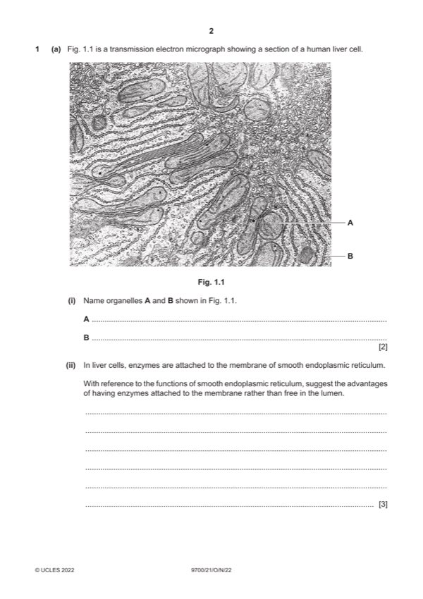

Question 1

Original paper page 2
Part 1(a)(i) — solution
A mitochondrion ; 2
B rough endoplasmic reticulum ; A ribosome / 80S ribosome
Mark points
- Include the ideas shown in the solution above.
Part 1(a)(ii) — solution
any three from: 3
(more efficient) synthesis / metabolism / AW, of named product ;
e.g. lipid / named lipid
phospholipid
steroid / steroid hormone / named, e.g. oestrogen / testosterone
sterol / cholesterol
I ref. to storage
other function ; e.g. detoxification
max two from:
idea that synthesis of products / AW, is a pathway / requires more than one enzyme ;
further detail ;
e.g. enzymes of same pathway are, close together / in clusters
products of one reaction are substrates of the next
suggestion that membrane gives enzymes, more stability / greater protection (from degradation) ;
AVP ;
e.g. idea of greater efficiency as enzyme held so that active site faces substrates in lumen
suggestion that allows reactions to occur on cytoplasmic side of membrane
suggestion that allows reaction to continue / complete, in SER transport vesicles
2022 Page 7 of 17
9700/21 Cambridge International AS & A Level – Mark Scheme October/November 2022
Mark points
- Include the ideas shown in the solution above.
Part 1(b) — solution
any three from: 3
higher magnification (without loss of detail) ;
higher resolution / ability to see object that are close together as separate objects ;
ref. to resolution of (up to) 0.5 nm compared to, 200 nm / 0.2 µm (light microscope) ;
A ranges, e.g. 0.5–30 nm and 100–300 nm
ability to see organelles such as, SER / ribosomes / other named organelle ;
AVP ;
e.g. very thin sections, qualified, e.g. for greater internal detail
Mark points
- Include the ideas shown in the solution above.